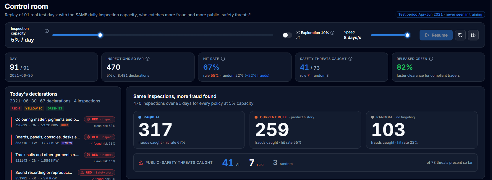

Chaque jour, des milliers de marchandises entrent sur le territoire. La douane ne peut en inspecter physiquement qu’une petite fraction. Toute la question est donc : lesquelles ?
La sélection repose surtout sur des règles fixes (par exemple : « ce produit a souvent été fraudé par le passé ») et sur l’expérience des agents. Ces règles sont utiles, mais elles sont rigides, faciles à contourner par les fraudeurs, et regardent un seul critère à la fois.
Beaucoup de contrôles ne trouvent rien, pendant que des fraudes passent. Chaque contrôle inutile immobilise un agent et retarde un opérateur honnête ; chaque fraude manquée est une recette perdue pour l’État ou un risque pour les citoyens.
Sous-évaluation, fausse origine, mauvais classement tarifaire : la fraude aux droits fait perdre directement des recettes au budget de l’État.
Produits dangereux, contrefaçons, marchandises interdites : la fraude critique est rare, mais une seule manquée peut coûter très cher. Elle ne doit jamais être noyée parmi les fraudes fiscales.
Pour chaque déclaration, un circuit proposé et quatre raisons en langage clair :
À côté, RAQIB affiche ce qu’aurait choisi la meilleure règle actuelle, pour que le gain soit visible déclaration par déclaration. L’agent garde toujours le dernier mot et sa décision est enregistrée dans un journal infalsifiable.
Le cahier des charges interdit, à juste titre, l’usage de données confidentielles. Nous avons donc choisi le jeu de données public de référence pour ce problème :
déclarations, 22 informations chacune (produit, origine, valeur, poids, taxe, importateur, déclarant…)
produits différents · 14 482 importateurs · 119 pays d’origine
connus pour chaque déclaration : y avait-il fraude ? était-elle critique pour la sécurité ?
45 519 déclarations, de janvier 2020 à mars 2021. C’est tout ce que le modèle a le droit de voir.
8 481 déclarations d’avril à juin 2021, jamais montrées au modèle. On les rejoue jour par jour, exactement comme en conditions réelles.
Ce découpage dans le temps est essentiel : il reproduit la vraie situation d’une douane, qui doit décider aujourd’hui avec ce qu’elle sait d’hier. Un découpage au hasard aurait donné des résultats plus flatteurs, mais faux.
Cinq étapes simples, chacune motivée par une contrainte réelle du métier douanier.
Deux modèles d’intelligence artificielle apprennent, à partir des résultats des contrôles déjà réalisés, à estimer pour chaque nouvelle déclaration la probabilité de fraude aux droits et celle de fraude critique. Ils croisent des dizaines de signaux à la fois : historique du produit, de l’importateur, du déclarant, du fournisseur, de l’origine, du bureau, valeur, poids, prix unitaire.
Pourquoi : une règle regarde un critère ; un fraudeur en change un. Croiser les signaux rend le ciblage beaucoup plus difficile à contourner.
Les résultats sont calibrés : quand RAQIB annonce « 60 % de risque », environ 60 % de ces déclarations sont effectivement frauduleuses. Sur les 10 % les plus risquées, le modèle prévoyait 61,7 % de fraude, on en a observé 61,4 %.
Pourquoi : un agent doit pouvoir faire confiance au chiffre qu’il lit, et un chef de bureau doit pouvoir fixer des seuils.
Chaque jour, les places de contrôle disponibles sont attribuées : d’abord les alertes de sécurité publique, puis les probabilités de fraude les plus élevées. Une petite part optionnelle est tirée au hasard (l’« exploration »).
Pourquoi : la sécurité passe avant les recettes. L’exploration empêche le système de devenir aveugle aux nouvelles fraudes et lui permet de continuer à apprendre sans biais.
Pour chaque déclaration, RAQIB donne les quatre raisons principales avec les vrais chiffres, par exemple : « Le produit 731815 (vis et boulons en fer ou acier) a été frauduleux dans 36 % de ses 127 déclarations passées (moyenne 22 %). » Pour la fraude aux droits, nous utilisons un modèle « boîte de verre » entièrement lisible, aussi précis que le modèle « boîte noire ».
Pourquoi : un agent ne contrôle pas sur la foi d’un chiffre, et une administration doit pouvoir justifier ses contrôles.
RAQIB propose, l’agent dispose. Chaque décision est inscrite dans un journal chaîné : toute modification a posteriori est détectable. Quand les deux modèles internes ne sont pas d’accord, la déclaration n’est jamais libérée automatiquement : elle part au minimum en contrôle documentaire.
Pourquoi : responsabilité, transparence et confiance. L’outil reste un conseiller.
Nous avons rejoué les 91 jours de la période de test. Chaque méthode disposait exactement de la même capacité : 5 % des déclarations du jour, soit 470 contrôles au total.
| Même capacité (470 contrôles) | Fraudes | Menaces | Contrôles fructueux |
|---|---|---|---|
| RAQIB | 317 | 41 | 67 % |
| Règle actuelle (historique du produit) | 259 | 7 | 55 % |
| Au hasard | 103 | 3 | 22 % |
de contrôles en moins pour trouver autant de fraudes que la règle (379 contrôles au lieu de 470).
semaines où RAQIB bat la règle : le gain est régulier, pas un coup de chance.
de fraude parmi les 371 cas « incertains » renvoyés à l’agent (moyenne : 22 %). Le doute est signalé au bon endroit.

+22 % de fraudes trouvées avec le même nombre d’agents et de contrôles. Chaque contrôle devient plus rentable pour le budget de l’État.
Les menaces critiques passent en priorité absolue : près de six fois plus de menaces interceptées que la règle actuelle sur la même période.
82 % des déclarations en circuit vert : les opérateurs honnêtes sont dédouanés plus vite, ce qui soutient la compétitivité des ports et des entreprises.
Chaque proposition est expliquée, chaque décision est tracée dans un journal infalsifiable. L’agent reste responsable et l’administration peut rendre des comptes.
Le même pipeline est réentraîné par la douane sur ses propres déclarations et résultats de contrôle. Aucune donnée ne quitte l’administration. L’apprentissage complet prend quelques minutes sur un ordinateur ordinaire, sans serveur coûteux.
RAQIB note les déclarations en parallèle des règles actuelles, sans influencer aucune décision. On compare ensuite les résultats.
Quelques bureaux ou certains jours utilisent RAQIB, les autres gardent les règles. On mesure les recettes récupérées, les menaces trouvées et les délais de dédouanement.
Suivi hebdomadaire de la dérive et de l’équité entre bureaux, une part de contrôles aléatoires maintenue en permanence, conformité à la loi organique 2004-63 sur la protection des données personnelles et avis de l’INPDP.